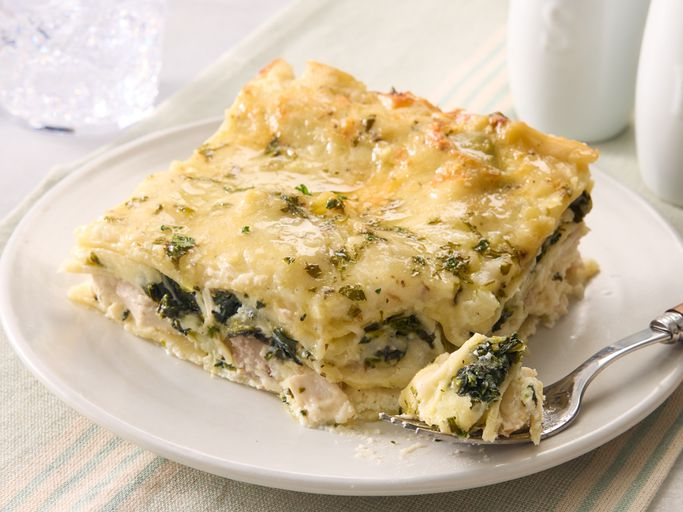

Lasagna Recipe

Ingredients
- Noodles: Of course, you'll need lasagna noodles.
- Butter: Cook the onion and garlic in butter.
- Vegetables: You'll need an onion and two packages of frozen spinach.
- Broth:Use store-bought chicken broth or
- Garlic: Cook a clove of minced garlic with the onion for a more intense flavor.
- Flour: All-purpose flour thickens the sauce.
- Milk: Whole milk is best for this decadent white sauce.
- Seasonings and herbs:This chicken lasagna is seasoned with salt, dried basil, dried oregano, black pepper, and fresh parsley.
- Cheeses: You'll need mozzarella, Parmesan, and ricotta cheeses.
- Chicken:This white chicken lasagna is a great use for leftover chicken!
How to Make Chicken Lasagna
You'll find the full, step-by-step recipe below — but here's a brief overview of what you can expect when you make this homemade chicken lasagna:
- 1. Boil and drain the lasagna noodles.
- Cook the onion and garlic in butter, then whisk in the flour. Add the broth, milk, and salt.
- Add some of the mozzarella and Parmesan. Season with basil, oregano, and pepper. Set aside.
- Assemble the lasagna according to the recipe.
- Bake in the preheated oven.
How to Store Chicken Lasagna
Allow the chicken lasagna to cool completely, then store the leftovers in an airtight container in the refrigerator for up to five days. Reheat in the microwave or in the oven.
Can You Freeze Chicken Lasagna?
If you're planning to freeze the white chicken lasagna, it's best to cook it in a foil baking dish. Allow it to cool, then cover the whole thing in at least one layer of storage wrap. Wrap it again in aluminum foil to prevent freezer burn. Freeze for up to three months.